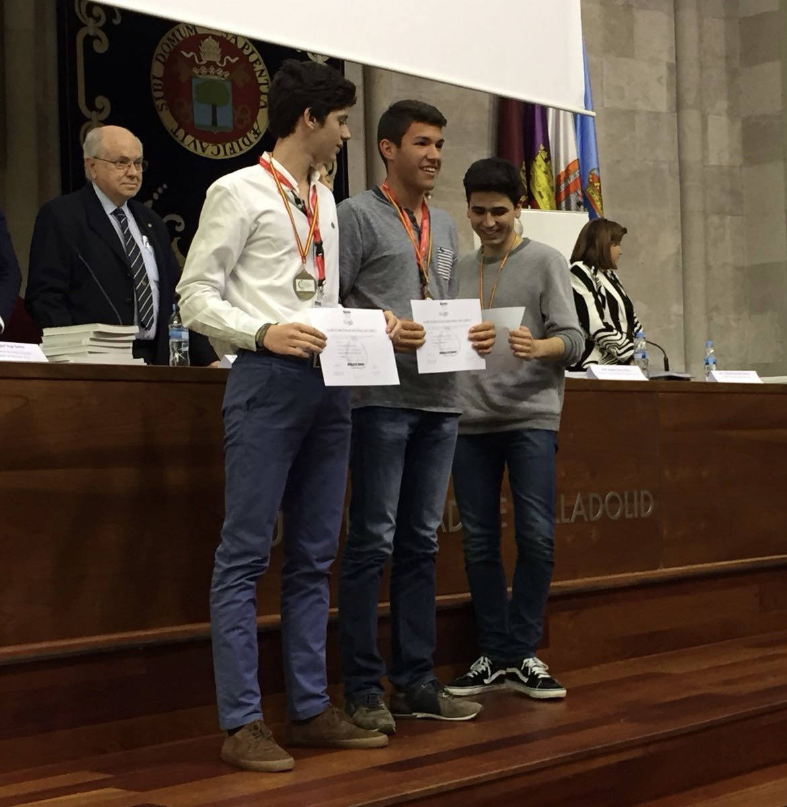
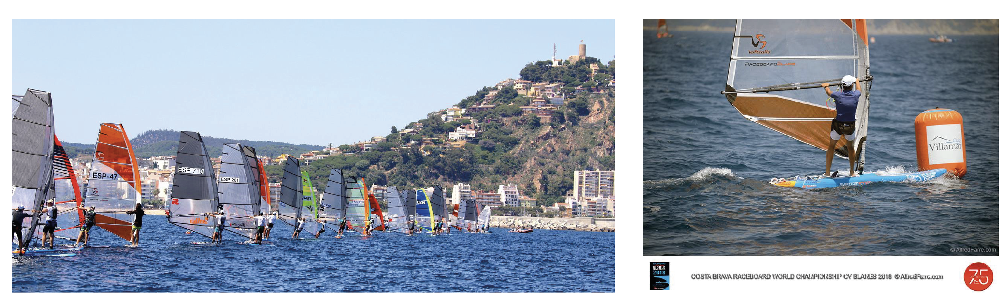
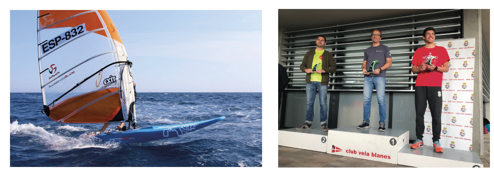
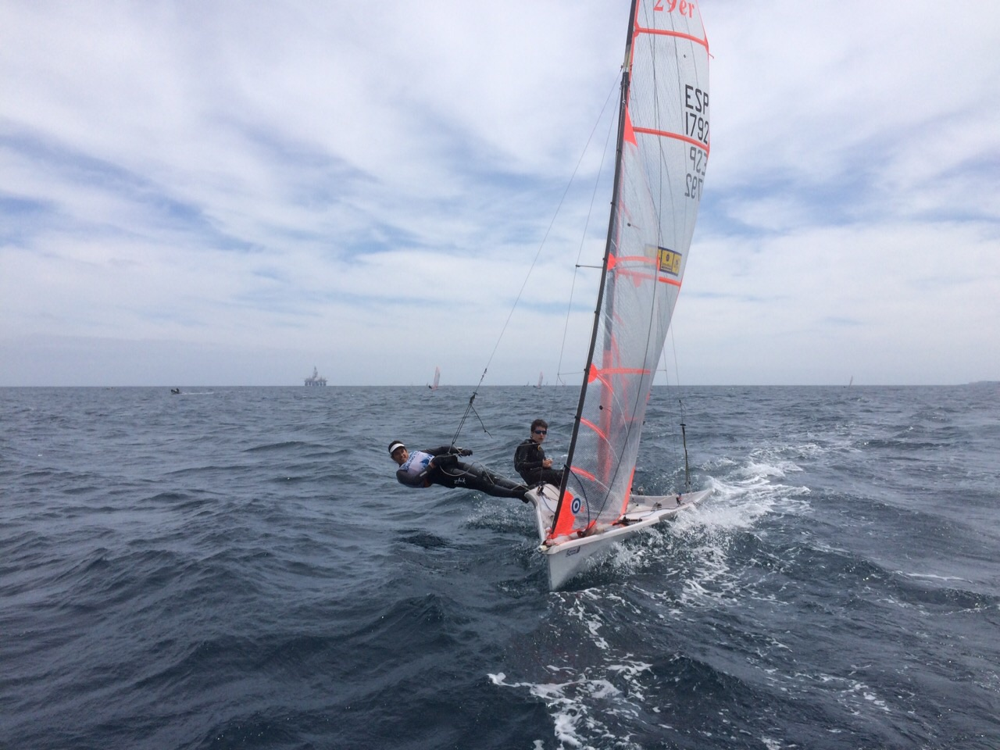

2023
Cape Cod Marathon
First marathon — October 8th in Falmouth, Cape Cod, MA. An incredible venue for a milestone.
Life outside the lab — scroll down to go further back in time.
First marathon — October 8th in Falmouth, Cape Cod, MA. An incredible venue for a milestone.

Spontaneous idea, questionable wisdom — an unforgettable first triathlon in Nice, France.

Running became my way to rest, reset, and come back to research energized. First race after arriving for my Masters at Harvard.

Moved to Switzerland to study Computer Science at EPFL. Traded competitive sailing for hiking and skiing in the Alps during breaks.

Bronze medal in the national Physics Olympiads. My IB diploma year sparked a lifelong passion for learning.

Ten years pursuing a Music Degree under Professor William Waters — chamber music, choir, and the beauty of baroque.

Two World Championships — racing against Olympic athletes, fighting for position on the starting line.

Big sails, long thin boards, and regional championship trophies in this technical and demanding discipline.

Tried foiling — challenging and fun in equal measure. A humbling reminder that there's always more to learn.
Nico and me practicing gibes before the race at this breathtaking venue on Lake Garda, Italy.

With Nico, sailing Spain and Europe in the fast and demanding 29er two-handed skiff.

Grew up in Salou on the Mediterranean coast of Spain. Started sailing at age 8 in an Optimist — and never looked back.